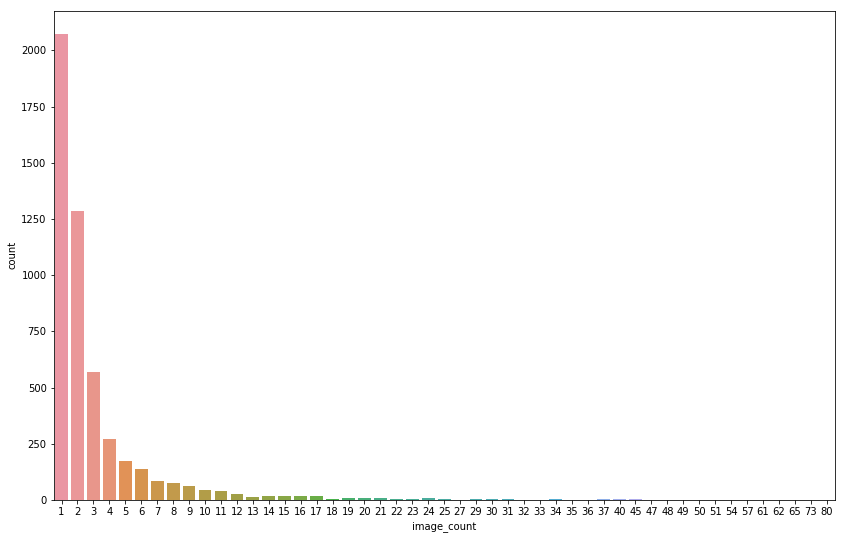
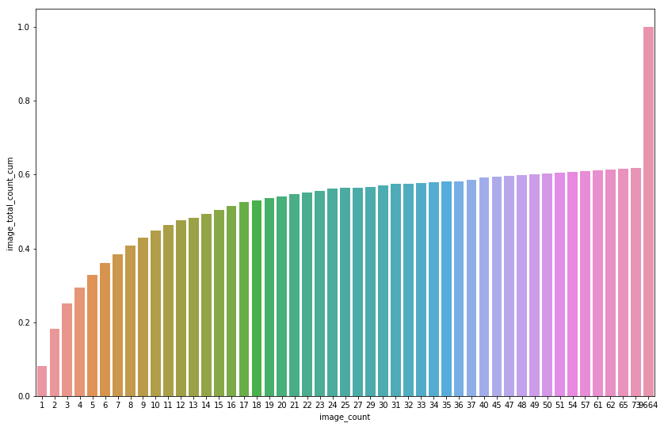
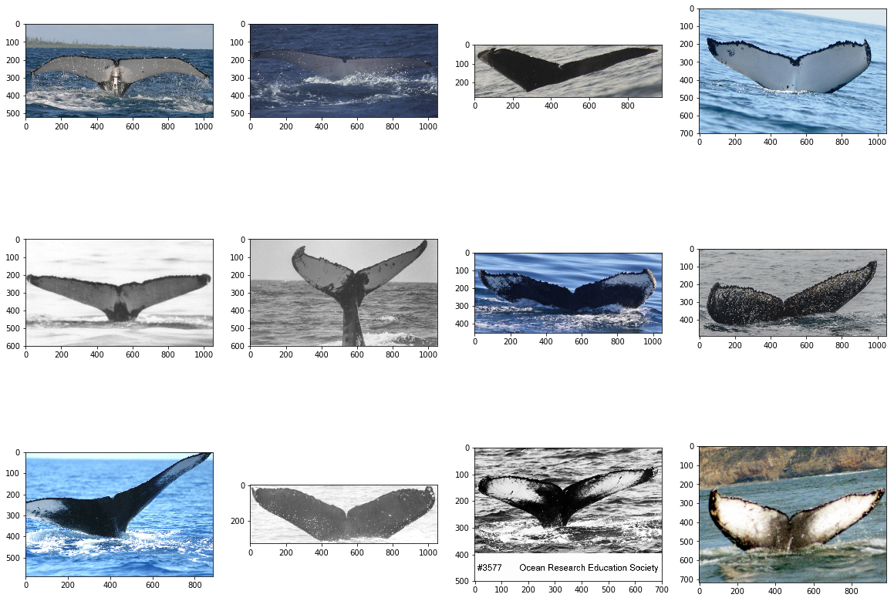
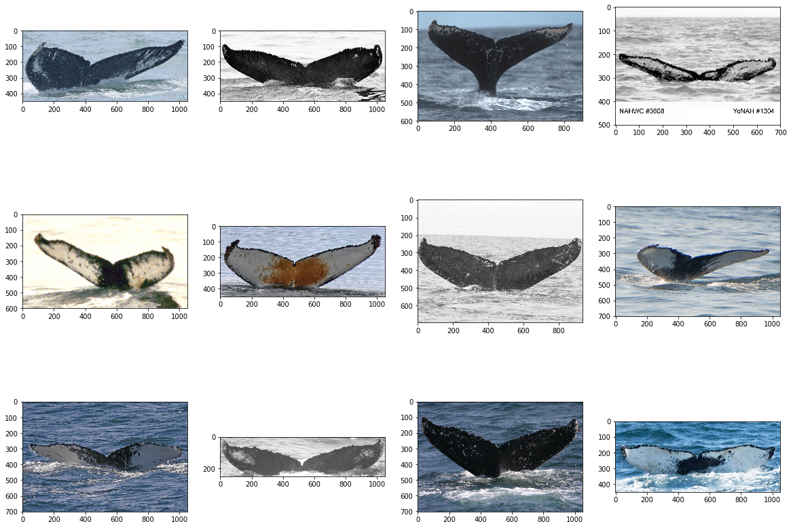
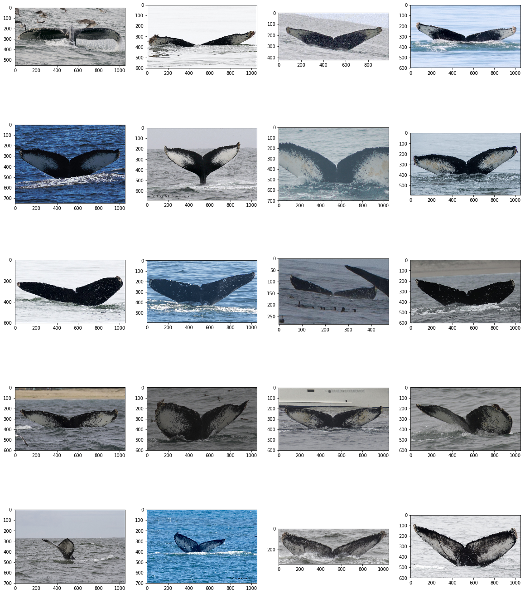
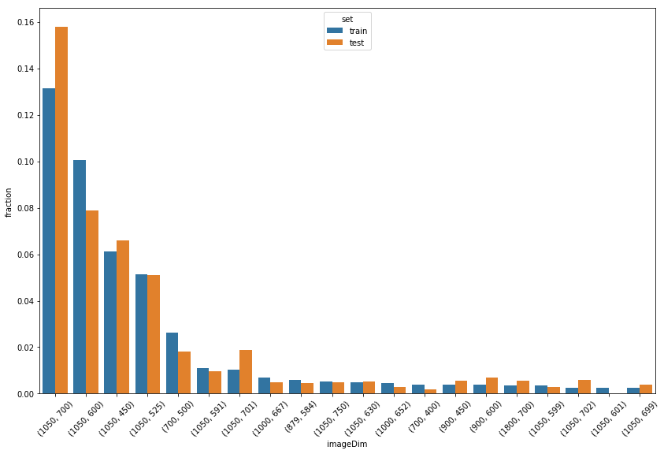
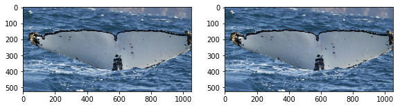
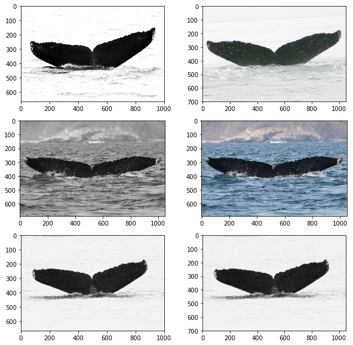

Today I wanted to try my hand at a kaggle competition that seemed like another great place to practice using image neural networks. The competition asks us to identify humpback whales from their flukes (tail fins). Before getting into the model training, however, it's always important to look at your data. So let's do some basic exploratory data analysis (EDA) to better inform ourselves on just what our model will be looking at and attempting to train on.
Basic data exploration:
- distribution of images per whale
- viewing some images (same whale, different whale, 'new_whale')
- distribution of image resolution between train & test
- duplicate image analysis by perceptual hash
# used ideas from:
# https://www.kaggle.com/mmrosenb/whales-an-exploration
# https://www.kaggle.com/stehai/duplicate-images
%reload_ext autoreload
%autoreload 2
%matplotlib inline
import numpy as np # linear algebra
import pandas as pd # data processing, CSV file I/O (e.g. pd.read_csv)
import cv2
import os
import seaborn as sns
import matplotlib.pyplot as plt
plt.rcParams['figure.figsize'] = [14, 9]
import collections
from PIL import Image
DIR = "../input"
train = pd.read_csv(os.path.join(DIR, "train.csv"))
test = pd.read_csv(os.path.join(DIR, "sample_submission.csv"))
train.shape, test.shape
((25361, 2), (7960, 2))
train.head()
| Image | Id | |
|---|---|---|
| 0 | 0000e88ab.jpg | w_f48451c |
| 1 | 0001f9222.jpg | w_c3d896a |
| 2 | 00029d126.jpg | w_20df2c5 |
| 3 | 00050a15a.jpg | new_whale |
| 4 | 0005c1ef8.jpg | new_whale |
Distribution of images per whale is highly skewed.
- 2000+ whales have just one (!!!) image
- Single whale with most images have 73 of them
- Images dsitribution:
- almost 30% comes from whales with 4 or less images
- almost 40% comes from 'new_whale' group (!!!)
- the rest 30% comes from whales with 5-73 images
Let's look at how I figured out the above points. First let's look at the most populous whales in the dataset:
train['Id'].value_counts()[:4]
new_whale 9664
w_23a388d 73
w_9b5109b 65
w_9c506f6 62
Name: Id, dtype: int64
So this new_whale distinction appears to take up quite a bit of the dataset! Let's now see how many image per whale we can expect.
counted = train.groupby("Id").count().rename(columns={"Image":"image_count"})
counted.loc[counted["image_count"] > 80,'image_count'] = 80
plt.figure()
sns.countplot(data=counted, x="image_count")
plt.show()

So it appears that a lot of the whales only have a few example images in the training set. Lets look at the cumulative totals to get an idea of the distribution.
image_count_for_whale = train.groupby("Id", as_index=False).count().rename(columns={"Image":"image_count"})
whale_count_for_image_count = image_count_for_whale.groupby("image_count", as_index=False).count().rename(columns={"Id":"whale_count"})
whale_count_for_image_count['image_total_count'] = whale_count_for_image_count['image_count'] * whale_count_for_image_count['whale_count']
whale_count_for_image_count['image_total_count_cum'] = whale_count_for_image_count["image_total_count"].cumsum() / len(train)
sns.barplot(x='image_count',y='image_total_count_cum',data=whale_count_for_image_count)
<matplotlib.axes._subplots.AxesSubplot at 0x7f1f03317128>

whale_count_for_image_count[:10]
| image_count | whale_count | image_total_count | image_total_count_cum | |
|---|---|---|---|---|
| 0 | 1 | 2073 | 2073 | 0.081740 |
| 1 | 2 | 1285 | 2570 | 0.183076 |
| 2 | 3 | 568 | 1704 | 0.250266 |
| 3 | 4 | 273 | 1092 | 0.293324 |
| 4 | 5 | 172 | 860 | 0.327235 |
| 5 | 6 | 136 | 816 | 0.359410 |
| 6 | 7 | 86 | 602 | 0.383147 |
| 7 | 8 | 76 | 608 | 0.407121 |
| 8 | 9 | 62 | 558 | 0.429123 |
| 9 | 10 | 46 | 460 | 0.447262 |
whale_count_for_image_count[-3:]
| image_count | whale_count | image_total_count | image_total_count_cum | |
|---|---|---|---|---|
| 46 | 65 | 1 | 65 | 0.616064 |
| 47 | 73 | 1 | 73 | 0.618942 |
| 48 | 9664 | 1 | 9664 | 1.000000 |
A few thoughts:
1. 'Typical' CNNs (e.g. resnet) are going to have difficulty learning from only 1-4 examples of each whale. This implies that we might want to try an alternative architecture for this task. One-shot learning seems to be related to this, I'll look into this further.
2. The new_whale category takes up over 40% of our training data. Will be interesting to see whether our model will have anyting to gain from these unknown whales or whether it would benefit us to just cut them from the dataset.
Let's see some images
- There are a wide range of images in the dataset. Large variety in color, colormaps (RGB vs black/white), image size and orientation of the image. Would greatly benefit from some standardization.
- Looking at different images of one specific whale makes it seem like identification would be possible as they appear quite unique
Some images of 'new_whale'
fig = plt.figure(figsize = (20, 15))
for idx, img_name in enumerate(train[train['Id'] == 'new_whale']['Image'][:12]):
y = fig.add_subplot(3, 4, idx+1)
img = cv2.imread(os.path.join(DIR,"train",img_name))
img = cv2.cvtColor(img, cv2.COLOR_BGR2RGB)
y.imshow(img)
plt.show()

Now some pictures of whales that have just 1 image: quite a large variance in colors
single_whales = train['Id'].value_counts().index[-12:]
fig = plt.figure(figsize = (20, 15))
for widx, whale in enumerate(single_whales):
for idx, img_name in enumerate(train[train['Id'] == whale]['Image'][:1]):
axes = widx + idx + 1
y = fig.add_subplot(3, 4, axes)
img = cv2.imread(os.path.join(DIR,"train",img_name))
img = cv2.cvtColor(img, cv2.COLOR_BGR2RGB)
y.imshow(img)
plt.show()

Below: each row shows pictures of one whale. I think it's quite easy to at least see similiar appearence there
topN=5
top_whales = train['Id'].value_counts().index[1:1+topN]
fig = plt.figure(figsize = (20, 5*topN))
for widx, whale in enumerate(top_whales):
for idx, img_name in enumerate(train[train['Id'] == whale]['Image'][:4]):
axes = widx*4 + idx+1
y = fig.add_subplot(topN, 4, axes)
img = cv2.imread(os.path.join(DIR,"train",img_name))
img = cv2.cvtColor(img, cv2.COLOR_BGR2RGB)
y.imshow(img)
plt.show()

Resolutions
over 7000 unique resolutions but 39 most popular cover ~45% images (both in train and in test)
imageSizes_train = collections.Counter([Image.open(f'{DIR}/train/{filename}').size
for filename in os.listdir(f"{DIR}/train")])
imageSizes_test = collections.Counter([Image.open(f'{DIR}/test/{filename}').size
for filename in os.listdir(f"{DIR}/test")])
def isdf(imageSizes):
imageSizeFrame = pd.DataFrame(list(imageSizes.most_common()),columns = ["imageDim","count"])
imageSizeFrame['fraction'] = imageSizeFrame['count'] / sum(imageSizes.values())
imageSizeFrame['count_cum'] = imageSizeFrame['count'].cumsum()
imageSizeFrame['count_cum_fraction'] = imageSizeFrame['count_cum'] / sum(imageSizes.values())
return imageSizeFrame
train_isdf = isdf(imageSizes_train)
train_isdf['set'] = 'train'
test_isdf = isdf(imageSizes_test)
test_isdf['set'] = 'test'
isizes = train_isdf.merge(test_isdf, how="outer", on="imageDim")
isizes['total_count'] = isizes['count_x'] + isizes['count_y']
dims_order = isizes.sort_values('total_count', ascending=False)[['imageDim']]
len(dims_order)
7053
isizes = pd.concat([train_isdf, test_isdf])
isizes.shape
(8150, 6)
isizes.head()
| imageDim | count | fraction | count_cum | count_cum_fraction | set | |
|---|---|---|---|---|---|---|
| 0 | (1050, 700) | 3330 | 0.131304 | 3330 | 0.131304 | train |
| 1 | (1050, 600) | 2549 | 0.100509 | 5879 | 0.231813 | train |
| 2 | (1050, 450) | 1556 | 0.061354 | 7435 | 0.293167 | train |
| 3 | (1050, 525) | 1303 | 0.051378 | 8738 | 0.344545 | train |
| 4 | (700, 500) | 667 | 0.026300 | 9405 | 0.370845 | train |
popularSizes = isizes[isizes['fraction'] > 0.002]
popularSizes.shape
(39, 6)
popularSizes.groupby('set').max()['count_cum_fraction']
set
test 0.456030
train 0.445803
Name: count_cum_fraction, dtype: float64
sns.barplot(x='imageDim',y='fraction',data = popularSizes, hue="set")
_ = plt.xticks(rotation=45)

Duplicates
- Found duplicates using imagehash. Great introduction here
- 1 duplicate in train set
- 3 duplicates between train and test
- totally different than in playground dataset:
- playground duplicates
- solution that used duplicate information
import imagehash
def getImageMetaData(file_path):
with Image.open(file_path) as img:
img_hash = imagehash.phash(img)
return img.size, img.mode, img_hash
def get_img_duplicates_info(df, dataset):
m = df.Image.apply(lambda x: getImageMetaData(os.path.join(DIR, dataset, x)))
df["Hash"] = [str(i[2]) for i in m]
df["Shape"] = [i[0] for i in m]
df["Mode"] = [str(i[1]) for i in m]
df["Length"] = df["Shape"].apply(lambda x: x[0]*x[1])
df["Ratio"] = df["Shape"].apply(lambda x: x[0]/x[1])
df["New_Whale"] = df.Id == "new_whale"
img_counts = df.Id.value_counts().to_dict()
df["Id_Count"] = df.Id.apply(lambda x: img_counts[x])
return df
train_dups = get_img_duplicates_info(train, "train")
train_dups.head()
| Image | Id | Hash | Shape | Mode | Length | Ratio | New_Whale | Id_Count | |
|---|---|---|---|---|---|---|---|---|---|
| 0 | 0000e88ab.jpg | w_f48451c | d26698c3271c757c | (1050, 700) | RGB | 735000 | 1.500000 | False | 14 |
| 1 | 0001f9222.jpg | w_c3d896a | ba8cc231ad489b77 | (758, 325) | RGB | 246350 | 2.332308 | False | 4 |
| 2 | 00029d126.jpg | w_20df2c5 | bbcad234a52d0f0b | (1050, 497) | RGB | 521850 | 2.112676 | False | 4 |
| 3 | 00050a15a.jpg | new_whale | c09ae7dc09f33a29 | (1050, 525) | RGB | 551250 | 2.000000 | True | 9664 |
| 4 | 0005c1ef8.jpg | new_whale | d02f65ba9f74a08a | (1050, 525) | RGB | 551250 | 2.000000 | True | 9664 |
t = train_dups.Hash.value_counts()
t = t.loc[t>1]
"Duplicate hashes: {}".format(len(t))
'Duplicate hashes: 1'
t
94216bb289ccd63f 2
Name: Hash, dtype: int64
t.index[0]
'94216bb289ccd63f'
train_dups[train_dups['Hash'] == t.index[0]].head()
| Image | Id | Hash | Shape | Mode | Length | Ratio | New_Whale | Id_Count | |
|---|---|---|---|---|---|---|---|---|---|
| 9542 | 60a3f2422.jpg | w_7a8ce16 | 94216bb289ccd63f | (1050, 525) | RGB | 551250 | 2.0 | False | 6 |
| 12618 | 7f7a63b8a.jpg | w_7a8ce16 | 94216bb289ccd63f | (1050, 525) | RGB | 551250 | 2.0 | False | 6 |
The only duplicate found in train dataset comes from the same whale.
fig = plt.figure(figsize = (20, 10))
for idx, img_name in enumerate(train_dups[train_dups['Hash'] == t.index[0]]['Image'][:2]):
y = fig.add_subplot(3, 4, idx+1)
img = cv2.imread(os.path.join(DIR,"train",img_name))
img = cv2.cvtColor(img, cv2.COLOR_BGR2RGB)
y.imshow(img)
plt.show()

test_dups = get_img_duplicates_info(test, "test")
test_d = test_dups.Hash.value_counts()
test_d = test_d.loc[test_d>1]
"Duplicate hashes in test: {}".format(len(test_d))
'Duplicate hashes in test: 0'
common_hashes = test_dups.merge(train_dups, how="inner", on="Hash", suffixes=("_test","_train"))
common_hashes.head()
| Image_test | Id_test | Hash | Shape_test | Mode_test | Length_test | Ratio_test | New_Whale_test | Id_Count_test | Image_train | Id_train | Shape_train | Mode_train | Length_train | Ratio_train | New_Whale_train | Id_Count_train | |
|---|---|---|---|---|---|---|---|---|---|---|---|---|---|---|---|---|---|
| 0 | d37179fd1.jpg | new_whale w_23a388d w_9b5109b w_9c506f6 w_0369a5c | eecad0b52d4ac2f0 | (1050, 700) | RGB | 735000 | 1.500000 | False | 7960 | 01f66ca26.jpg | new_whale | (1000, 667) | RGB | 667000 | 1.499250 | True | 9664 |
| 1 | f50529c53.jpg | new_whale w_23a388d w_9b5109b w_9c506f6 w_0369a5c | afdac0b52a5a82b5 | (1050, 690) | RGB | 724500 | 1.521739 | False | 7960 | 579886448.jpg | new_whale | (1050, 690) | RGB | 724500 | 1.521739 | True | 9664 |
| 2 | fb3879dc7.jpg | new_whale w_23a388d w_9b5109b w_9c506f6 w_0369a5c | ad4ac2b43d0fcaf0 | (1050, 700) | RGB | 735000 | 1.500000 | False | 7960 | b95d73a55.jpg | w_691f2f6 | (1000, 667) | RGB | 667000 | 1.499250 | False | 8 |
"Duplicate hashes between train and test: {}".format(len(common_hashes))
'Duplicate hashes between train and test: 3'
below each row shows images with the same pHash, left column from train, right from test
fig = plt.figure(figsize = (10, 10))
for idx, images in enumerate(common_hashes[['Image_train','Image_test']].values):
y = fig.add_subplot(len(common_hashes),2, idx*2+1)
img = cv2.imread(os.path.join(DIR,"train",images[0]))
img = cv2.cvtColor(img, cv2.COLOR_BGR2RGB)
y.imshow(img)
y = fig.add_subplot(len(common_hashes),2, idx*2+2)
img = cv2.imread(os.path.join(DIR,"test",images[1]))
img = cv2.cvtColor(img, cv2.COLOR_BGR2RGB)
y.imshow(img)
plt.show()

# train duplicates - to remove:
train_to_remove = train_dups[train_dups['Hash'] == t.index[0]].drop_duplicates('Hash')[['Image']]
train_to_remove.to_csv("train_remove.csv",index=False)
train_to_remove.head()
| Image | |
|---|---|
| 9542 | 60a3f2422.jpg |
# easy answers in test:
easy_peasy = common_hashes[['Image_test','Id_train']]
easy_peasy.to_csv("test_easy.csv", index=False)
easy_peasy.head()
| Image_test | Id_train | |
|---|---|---|
| 0 | d37179fd1.jpg | new_whale |
| 1 | f50529c53.jpg | new_whale |
| 2 | fb3879dc7.jpg | w_691f2f6 |
Conclusion
Just by poking around the dataset I've gained quite a bit of insight on how we're going to tackle this problem. My next step is going to be cleaning and standardizing the dataset, to make it easier to train on. Then, I'll need to find an architecture that is the best suited for learning off of very few examples. I'm not sure if such an architecture exists but I'll report back with what I find!